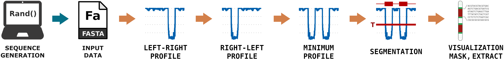
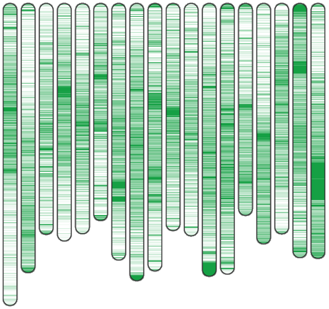

- GPLv3 License
- Contact Us :
 +351 234 370 506
+351 234 370 506  https://cobilab.github.io
https://cobilab.github.io
AlcoR tools
Information
AlcoR info
Extraction
AlcoR extract
Mapping
AlcoR mapper
Simulation
AlcoR simulation
Visualization
AlcoR visual
Methodology
A mapping scheme using smoothed-segmented bi-directional data compression
and a simulation scheme with extraction, pseudo-random generation, and modeling

AlcoR Simulation at a Glance
AlcoR deals with three types of sub-models, namely extraction of a sub-sequence from a FASTA file containing a sequence using the initial and ending positions, simulation of custom pseudo-random sequences with Linear congruential generator (LCG) with seed and size as the main parameters, and model learning from a FASTA file and further generation of a sequence with a custom size using a finite-context model of a given context order and bet parameter.
Read the Article onlineAlcoR Mapping at a Glance
AlcoR uses a bidirectional compression scheme of an input string assuming two causal directions, from the sequence’s beginning to end and the opposite, followed by its minimum, smoothing, segmentation, and visualization operations. The method uses a compression scheme that combines multiple context models with specific memory capacities to consider different distances between patterns. These models include the substitution tolerant context models that provide a higher sensitivity.
Read the Article onlineInstallation
Install AlcoR using Conda
$ conda install -y -c bioconda alcor
Install AlcoR using Git and Cmake
$ git clone https://github.com/cobilab/alcor
$ cd alcor/src/ && cmake . ; make
Install AlcoR using Wget and Cmake
$ wget https://github.com/cobilab/alcor/archive/refs/tags/v1.9.zip
$ unzip v1.9.zip; cd alcor-1.9/src/ && cmake . ; make
Pipelines
Simulate, Map, and Visualize LCRs: a synthetic example
This pipeline generates a FASTA file containing Low-Complexity Region (LCR) sequences, followed by its LCR mapping and visualization. To perform this pipeline, AlcoR and the following Bash script must run
#!/bin/bash # # This code creates a simple repetitve sequence: # echo ">repetitive dna" > repetitive.fa; for((x=1;x<=100;++x)); do echo "ACGTACGTACGTACGTACGTACGTACGTACGTACGTACGTACGTACGTACGTACGTACGTACGT" >> repetitive.fa; done # # This code simulates a sequence containig LCRs in several parts: # AlcoR simulation -rs 2000:0:1:0:0:0 -fs 1:2000:1:3:0:0:0:repetitive.fa \ -rs 2000:0:11:0:0:0 -fs 1:2000:1:3:0:0:0:repetitive.fa -rs 2000:0:21:0:0:0 \ -rs 2000:0:17:0:0:0 -rs 2000:0:27:0:0:0 -rs 2000:0:17:0:0:0 -rs 2000:0:31:0:0:0 \ -rs 2000:0:47:0:0:0 -rs 2000:0:37:0:0:0 -rs 2000:0:55:0:0:0 -rs 2000:0:67:0:0:0 \ -rs 2000:0:17:0:0:0 -rs 2000:0:71:0:0:0 > example.fasta; # # This code maps the LCRs: # AlcoR mapper -v -w 10 --dna -m 11:50:0:1:0:0.9/0:0:0 example.fasta > LCRs.csv # # This code creates an image depicting the LCRs: # AlcoR visual -v -o map.svf LCRs.csv #
This code will generate the following image with the LCRs for the simulated sequence characterized by the green color
Herpesvirus genomes comparative LCR Maps
This pipeline assumes that there are 9 herpesviruses genomes in each FASTA respective file with the names declared at the GENOMES array. Two types of LCRs are present: the local (within 5k symbols) and the distant. To compute the visual LCR maps without exploring the similarity between genomes, the following Bash script needs to run
#!/bin/bash
#
THRESHOLD=" 1.2 ";
#
declare -a GENOMES=("HSV-1" "HSV-2" "VZV" "EBV" "HCMV" "HHV6A" "HHV6B" "HHV7" "KSHV");
for GENOME in "${GENOMES[@]}"
do
AlcoR mapper -v --hide --color 100 --threshold $THRESHOLD --ignore 50 --dna -w 50 -m 13:50:0:1:10:0.9/3:10:0.9 $GENOME.fa > $GENOME-d.txt
AlcoR mapper -v --no-size --hide --threshold $THRESHOLD --color 1 \
--ignore 50 --dna -w 50 -m 13:50:5000:1:10:0.9/3:10:0.9 $GENOME.fa > $GENOME-l.txt
cat $GENOME-d.txt $GENOME-l.txt > $GENOME.txt;
done
AlcoR visual -o mapv.svg --strict-corner -s 10 -w 10 -e 0 --border-color cccccc \
HSV-1.txt:HSV-2.txt:VZV.txt:EBV.txt:HCMV.txt:HHV6A.txt:HHV6B.txt:HHV7.txt:KSHV.txt
#
Whole-genome LCR Maps
This pipeline assumes that there are 18 chromosome sequences of the Cassava genome in the H1.fa file (multi-FASTA format). These sequence are available at the repository. The LCR are computed taking into consideration similarity between chromosomes using the following Bash script
#!/bin/bash # THRESHOLD=" 0.5 "; # AlcoR mapper -v --hide --threshold $THRESHOLD --ignore 1000 --dna -w 5000 -m 14:50:0:1:10:0.9/3:10:0.9 \ -m 13:50:5000:1:10:0.9/3:10:0.9 --renormalize --prefix W H1.fa AlcoR visual -v -o map.svg -s 6 -w 18 -e 0 \ W1.txt:W2.txt:W3.txt:W4.txt:W5.txt:W6.txt:W7.txt:W8.txt:W9.txt:W10.txt:W11.txt:W12.txt:W13.txt:W14.txt:W15.txt:W16.txt:W17.txt:W18.txt #
This code will generate the following image with the LCRs for each Cassava chromosome

Masking LCR sequences
This pipeline assumes that there are 18 chromosome sequences of the Cassava genome in the H1.fa file (multi-FASTA format). These sequence are available at the repository. The genome is masked into masked-H1.fa taking into consideration the similarity between chromosomes. It will ignore regions lowe than 20 symbols. The following Bash script must run
#!/bin/bash # THRESHOLD=" 0.5 "; # AlcoR mapper -v --hide --threshold $THRESHOLD --ignore 20 --dna -w 10 -m 14:50:0:1:10:0.9/3:10:0.9 \ -m 13:50:5000:1:10:0.9/3:10:0.9 -k -o masked-H1.fa --renormalize --prefix W H1.fa #
The output are multiple FASTA files as many as the number of FASTA headers with prefix W (example: W1.txt, W2.txt, ...) and where the low complexity regions appear in lower case symbols.
Authors
Institutions
Acknowledgments
The authors wish to thank the Finnish Computing Competence Infrastructure (FCCI) for supporting this project with computational and data storage resources. We thank Jorge Silva for providing the conda extension.
Funding
This work was partially funded by National Funds through the FCT - Foundation for Science and Technology, in the context of the project UIDB/00127/2020. D.P. is funded by national funds through FCT – Fundação para a Ciência e a Tecnologia, I.P., under the Scientific Employment Stimulus - Institutional Call - reference CEECINST/00026/2018.